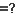

How to Compare Folders


|
How to Compare Folders |
|
|
There are several ways to compare folders and files. If you want a quick look at what has changed between two folders, it might be sufficient to just look at the dates and sizes of the files. If you are validating a CD copy, then a byte-by-byte comparison of every file is important. If you are comparing versions of source code, perhaps you want to consider only significant changes and ignore differences in whitespace or comments. Session settings define how, overall, a Folder Compare session should compare folders when the session is loaded. Comparison criteria include file timestamps, sizes, attributes and contents. Once the session is loaded, you can selectively recompare files with the Compare Contents  command or by opening the files in a file session. Generally, these criteria are used to compare files, and not folders directly. For instance, a folder's timestamp does not affect the comparison. A folder is classified as "newer" if it contains newer files. Folders are compared by aggregating the comparisons of files within them. Certain facts about a file can be determined quickly while others take some time. The Comparison tab of the Session Settings dialog is organized into Quick tests and Requires opening files. File systems typically provide fast access to file names, sizes, and timestamps (the date and time last modified). But to get the CRC of a file, the entire file will need to be read. Keep this in mind when selecting folder comparison criteria. See also Content Comparisons. The display aligns files and subfolders of the same name, left and right. You can modify the alignment by defining alignment overrides in the session's Rules . You can also align files regardless of what subfolder they are in by using the View > Ignore Folder Structure command.
|